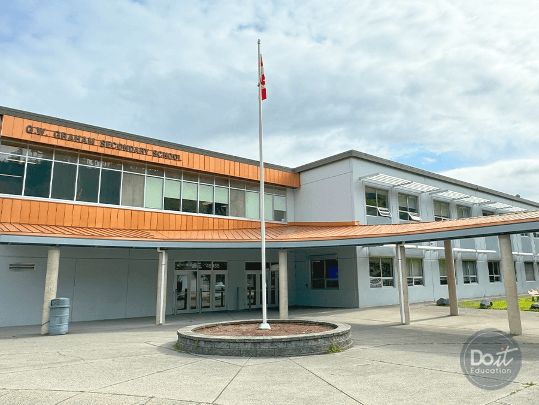

정보 업데이트 2026.08.30 · 2026–27 학년도 프로그램 비용 및 운영 정보 기준
CHILLIWACK SD33 · GUARDIAN
칠리왁 공립교육청 가디언형 (G8~11)
밴쿠버 공항에서 차로 약 1시간 30분 거리의 영어 중심 지역에서 진행하는 Grade 8~11 대상 공립교육청 가디언형 프로그램입니다.
👤 Grade 8~11📍 Chilliwack, BC🗣 첫 공식 언어 영어 98.2%🗓 3개월~1년 선택
영어 중심 생활환경과 다양한 선택 과목이 장점입니다. 3개월·4개월·1학기·1년 중 기간을 선택할 수 있는 것도 이 프로그램의 특징입니다.
PROGRAM SNAPSHOT
한눈에 보는 프로그램 개요
🎒
대상 학년
Grade 8~11
🏫
추천 고등학교
3개교 (모두 AP 운영)
🏡
홈스테이
교육청 자체 관리
💰
1년 총비용
CA$29,450 + 풀가디언 $8,000
SCHOOL PHOTOS
칠리왁 지역 학교 환경학교 배정 가능 여부와 개설 과목은 지원 시점에 확인합니다

칠리왁 교육청 소속 학교 · 에듀스마트 제공칠리왁 지역 학교 환경 · 에듀스마트 제공
VIDEO
영상으로 먼저 확인하세요에듀스마트 공식 소개 + 칠리왁 교육청 소개
▲ 에듀스마트 공식 소개 영상
▲ 칠리왁 공립교육청(SD33) 소개 영상
WHY CHILLIWACK
왜 칠리왁인가요?
칠리왁은 밴쿠버 공항에서 차로 약 1시간 30분 거리에 있는 도시입니다. 2021 인구조사에서 주민의 98.2%가 첫 공식 언어로 영어를 사용한 것으로 집계된 영어 중심 지역입니다. 자연과 주거지가 가까우며, 칠리왁 공립교육청(SD33)은 여러 세컨더리 학교와 다양한 선택 과목을 운영합니다. 학교별 국제학생·한국 학생 수는 지원 학기에 따라 달라지므로 배정 전 확인이 필요합니다.
🗣
언어 환경
첫 공식 언어 영어 98.2% · 2021 인구조사
🎓
전문 카운슬러
북미 전역 대학 진학 안내, 입시 전략·서류 상담
📖
우수한 교육 환경
전문 강사진과 질 높은 커리큘럼
🏡
홈스테이
교육청 자체 관리로 안정적 운영
🏕
다양한 액티비티
캠핑·하이킹·스키·카약, 방과후 동아리·현장학습
🗓
유연한 기간
3개월·4개월·1학기·1년 단기/장기 모두 가능
💡 교육청 개요 — 에듀스마트 안내 기준, 칠리왁 교육청의 국제학생 프로그램은 1995년에 시작되어 그동안 많은 국제학생이 참여해 왔습니다. 단기·장기 과정 모두 가능하며 학생에게 맞춘 맞춤형 커리큘럼을 제공합니다.
SCHOOLS
대표 고등학교 3곳모두 Grade 9~12 · AP 과정 운영
공립 · G9~12
Chilliwack Secondary School
46363 Yale Road, Chilliwack, BC · 약 1,500명 규모
AP 과정: Calculus, English, Biology, Chemistry 등
훌륭한 퍼포먼스를 선보이는 음악 프로그램과 아트 프로그램(Ceramic, 3D Computer Graphic Design)을 운영하며, 다양한 특별 활동 프로그램과 방과후 클럽이 있습니다.
공립 · G9~12
Sardis Secondary School
45460 Stevenson Road, Chilliwack, BC · 약 1,400명 규모 · 사르디스 지역
AP 과정: Computer Programming, Music Theory, Calculus, Psychology, Biology, Chemistry 등
칠리왁 내 타운홈이 많은 신개발 지역에 위치하며, 음악 프로그램(Concert Band, String Orchestra, Music Composition)과 다양한 스포츠 클럽이 강점입니다.
공립 · G9~12
G.W. Graham Secondary School
45955 Thomas Road, Chilliwack, BC · 약 1,300명 규모 · 사르디스 지역
AP 과정: English, Biology, Chemistry 등
훌륭한 음악 프로그램과 혁신적인 GrahamX, Outdoor Learning 프로그램을 운영합니다. 주요 시설로 350석 규모의 최신식 공연장이 있으며 방과후 클럽도 다양합니다.
💡 학교 선택 팁 — 세 학교 모두 AP를 운영하지만 개설 과목이 다릅니다. 이과 계열(Calculus, Physics 계열)을 폭넓게 원한다면 Chilliwack Secondary나 Sardis가, 컴퓨터·심리학까지 보려면 Sardis가, 야외 활동과 공연 예술을 원한다면 G.W. Graham이 유리합니다.
SERVICE SCOPE
가디언형 상세 서비스 4단계
1️⃣ 입국 전 서비스
가디언 위임 서류 발급 및 비자 신청용 서류 전달
온라인 사전 오리엔테이션
홈스테이 배정 및 안내
학생·보호자와 가디언 간 연락 체계 구축
2️⃣ 초기 정착 서비스 (입국 직후)
공항 픽업 및 홈스테이 체크인 동행
대중교통 이용법, 은행 계좌 개설, 생활 필수품 구매 지원
캐나다 생활 안내
3️⃣ 학교 등록 및 학업 관리
교육청 및 학교 등록 절차 동행
영어 레벨 테스트 안내 및 응시 지원
상담 교사와의 코스 선택 미팅 조율
성적표 및 주요 학사 정보 전달
학업 상담 및 진학 가이드
멘토링 추가 지원(별도 비용)
4️⃣ 생활 관리 서비스
홈스테이 생활 관리 및 가정과의 소통
응급 상황 시 병원 동행 및 보호자에게 공지
의료기관 안내 및 예약 지원
학생비자 연장 서비스(추가 비용 발생 가능)
COST
기간별 프로그램 요금표2026-2027 국제학생 기준 (CAD)
기간
지원비
홈스테이 배정
홈스테이 비용
가디언
공항픽업 (왕복)
프로그램 비용
총비용
3 Months
$300
$450
$3,750
$200
$200
$8,560
$13,460
4 Months
$300
$450
$4,900
$200
$200
$8,655
$14,705
1 Semester
$300
$450
$6,050
$200
$200
$8,750
$15,950
1 Year
$300
$450
$11,800
$200
$200
$16,500
$29,450약 2,945만 원
풀가디언 추가 시 +CA$8,000 (10개월)
1년 과정 기준 총 CA$37,450 · 약 3,745만 원 (2026.08 환율 기준)
●프로그램 비용에는 수업료(Tuition)와 학생 의료보험(Medical Insurance)이 모두 포함됩니다
●위 표의 '가디언 $200'은 기본 가디언 항목이며, 에듀스마트 풀가디언 서비스는 별도로 $8,000(10개월)입니다
●성적 증명서가 법적 효력을 갖추기 위해 증명서 확인 수수료 $275가 추가 부과됩니다
●통학 버스 서비스를 요청할 경우 Courtesy Ridership 수수료가 추가로 발생할 수 있습니다
●글루텐 프리(셀리악)·비건·채식·페스코·락토스 프리 등 특별 식단은 월 $100~200 추가, 기타 식이 요구사항은 개별 평가
●소액의 과외활동비(extracurricular fees)가 발생할 수 있습니다
●환율: 2026년 8월 기준 CAD/KRW 약 1,000원 적용
MENTORING
입시 멘토링 (별도 신청)
G10 ~ G11
학업 컨설팅
CA$4,500
약 450만 원 · 9~6월 또는 1~12월
G12
학업/입시 컨설팅 (대학원서 대행 기본 4개 포함)
CA$5,500
약 550만 원 · 9~6월 또는 1~12월
칠리왁 교육청에는 전문 카운슬러 팀이 북미 전역 대학 진학을 안내하는 자체 시스템이 있습니다. 다만 이는 학교 단위의 일반 진학 상담이며, 한국인 학생 맞춤 입시 전략과 원서 작성 대행까지 원하신다면 에듀스마트 멘토링을 별도로 신청하시면 됩니다.
FAQ
학부모님이 자주 묻는 질문
Q1밴쿠버에서 1시간 30분이면 너무 외진 것 아닌가요?
칠리왁은 인구 10만 명 규모의 독립된 도시로, 마트·병원·쇼핑센터 등 생활 인프라가 갖춰져 있어 일상에 큰 불편은 없습니다. 코퀴틀람·버나비만큼 한인 상권이 크지는 않지만, 한식당과 한국어 상담이 가능한 약국·치과 등 기본적인 한인 생활 인프라도 확인됩니다. 다만 대형 한인마트나 밀집된 한인 상권은 제한적이고, 밴쿠버 도심까지는 차로 약 1시간 30분이 걸립니다. 그만큼 일상에서 영어를 사용할 환경이 더 많다는 점은 칠리왁의 특징입니다.
Q2한국 학생이 정말 그렇게 적나요?
캐나다 통계청 2021 인구조사에서 칠리왁 주민의 98.2%가 첫 공식 언어로 영어를 사용한 것으로 집계됐습니다. 이는 학교별 한국 학생 수를 뜻하지는 않으므로 실제 배정 학교의 국제학생·한국 학생 현황은 지원 시 확인해야 합니다. 영어 중심 환경이 강한 만큼 초기 적응과 외로움도 함께 고려하세요.
Q33개월짜리 단기도 가능한가요?
가능합니다. 3개월($13,460), 4개월($14,705), 1학기($15,950), 1년($29,450) 중 선택할 수 있어, 이 시리즈에서 유일하게 단기 체험이 가능한 프로그램입니다. 다만 6개월 미만 과정은 학생비자(Study Permit)가 필요 없는 대신 학점 인정과 성적 활용에 제약이 있으니, 목적이 어학연수인지 학점 취득인지 먼저 정하세요.
Q4가디언 비용이 $200과 $8,000, 두 개인 이유가 뭔가요?
성격이 다릅니다. 요금표의 $200은 교육청 차원의 기본 가디언 등록으로, 법적 보호자 지정에 필요한 최소 절차입니다. $8,000(10개월)은 에듀스마트 풀가디언 서비스로, 공항 픽업·정착 지원·학교 등록 동행·성적표 전달·홈스테이 소통·응급 대응까지 실질적인 관리를 담당합니다. 한국에서 아이를 보내는 경우 후자를 붙이는 것이 일반적입니다.
Q5의료보험이 정말 포함되나요?
네, 프로그램 비용에 수업료와 학생 의료보험이 모두 포함된다고 명시되어 있습니다. 이 시리즈의 다른 가디언형 프로그램들이 의료비를 불포함으로 두는 것과 비교하면 확실한 장점입니다. 다만 캐나다 공공보험 특성상 치과·안경·처방약은 대체로 커버되지 않으니, 교정 치료 중이거나 안경을 자주 바꾸는 학생은 한국에서 미리 정리하고 가시는 것이 좋습니다.
Q6등하교는 어떻게 하나요?
홈스테이 위치에 따라 도보·자전거·스쿨버스를 이용합니다. 통학 버스를 요청할 경우 Courtesy Ridership 수수료가 별도로 발생합니다. 칠리왁은 광역 밴쿠버처럼 스카이트레인이 없고 버스 배차도 촘촘하지 않으므로, 홈스테이 배정 시 학교와의 거리를 반드시 확인하시기 바랍니다.
Q7채식이나 알러지 식단이 가능한가요?
가능합니다. 글루텐 프리(셀리악), 비건, 일반 채식, 페스코 채식, 락토스 프리 등 특별 식단을 요청할 수 있으며, 이 경우 월별 홈스테이 식사비에 $100~200가 추가됩니다. 그 외의 식이 요구사항은 개별 사례별로 평가됩니다. 요청은 신청 단계에서 미리 하셔야 홈스테이 배정에 반영됩니다.
Q8$275 증명서 확인 수수료는 뭔가요?
캐나다에서 받은 성적 증명서가 법적 효력을 갖추도록 인증하는 수수료입니다. 한국 대학 지원이나 학점 인정을 위해 공증된 성적표가 필요할 때 발생합니다. 대학 진학 시점에 필요한 비용이므로 미리 알고 계시면 됩니다.
Q9대학 진학 지원은 받을 수 있나요?
칠리왁 교육청에 전문 카운슬러 팀이 있어 북미 전역 대학 진학 안내와 입시 전략·서류 상담을 제공합니다. 이는 학교 자체 서비스로 별도 비용이 없습니다. 다만 한국 학생 특유의 상황(한국 대학 병행 지원, 학점 인정 등)까지 다루려면 에듀스마트 멘토링($4,500~5,500)을 추가하시는 편이 낫습니다.
Q10같은 칠리왁의 하이로드 아카데미와 뭐가 다른가요?
칠리왁 공립은 1,300~1,500명 규모의 큰 공립학교로 AP 과목과 동아리 선택지가 넓고 비용이 저렴합니다(1년 $37,450). 하이로드는 650명 규모의 기독교 사립으로 학급당 20~25명, 국제학생 3% 미만, 유학생 전담 교사 상주 등 관리가 훨씬 촘촘하지만 비용이 높습니다($48,775). 선택지의 다양성이냐, 관리의 밀도냐로 판단하시면 됩니다.